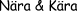
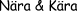

(festerier vi Linköpings universitet)
- 4-verkeriet (MatNat)
- Bi-6 (Teknisk Biologi)
- CC (Datavetenskap)
- ClubMästeriet (Industriell Ekonomi)
- FestMaskineriet (MaskinTeknik)
- Gläfs (Grundskollärarna)
- Elin Players (Ekonomi)
- VI-Ling (Ingeniörena)
- Y6 (Teknisk Fysik/Elektronik)

-
D6 (Luleå)
-
Reptilklubben (Luleå)
-
Dörrstopp (Luleå)
-
SexTas (Lund)
-
DTX (Lund)
-
Datas Klubbmästeri (KTH)
- Chalmers: D6 - E6 - MatNatSex - M6 - F6 - I6 - A6 - Zexet
-
Klubbverket (Uppsala)
-
Sexmästeriet, E-sek. (LTH)
- Umeå: feSTeriet - Pirayaklubben - Data Supær Föreningen
- Sexmästeriet (Gävle-Sandviken)
-
SexMästeriet (Ronneby)
-
SköSex (Skövde)